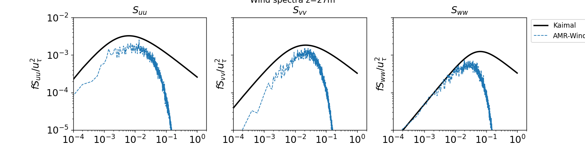
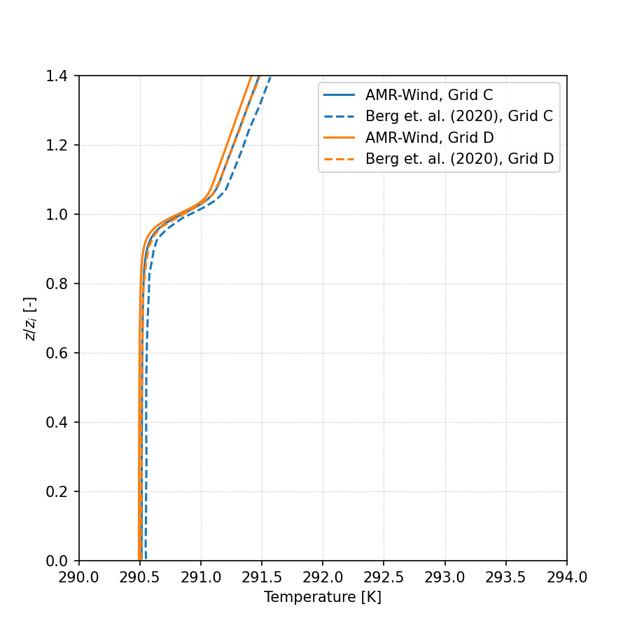
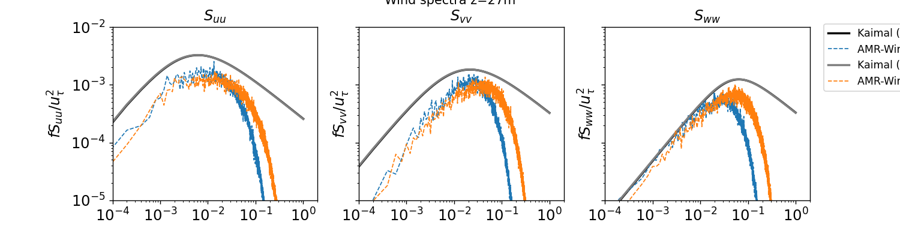

Neutral Atmospheric Boundary Layer
This benchmark problem is a conventionally neutral atmospheric boundary layer (ABL) and corresponds to the case presented in Berg et al. (2020). The flow is driven by a uniform, moderate geostrophic wind of 5 m/s, aligned in the x-direction. There is no specified heat flux at the surface. This case starts out weakly stably stratified and the turbulence naturally present evolves the flow to create a neutral layer with a capping inversion. The flow is dominated by streaks of high and low velocities near the surface and at heights typical for wind turbine rotors. The domain spatial size is 2560 m × 2560 m × 896 m. Berg et al. (2020) used resolutions ranging from \(\Delta x\) = \(\Delta y\) = 30 m and \(\Delta z\) = 14 m to \(\Delta x\) = \(\Delta y\) = 3.75 m and \(\Delta z\) = 1.75 m. The benchmark simulation in AMR-Wind uses \(\Delta x\) = \(\Delta y\) = 5 m and \(\Delta z\) = 4.87 m (512 × 512 × 184 cells), corresponding the horizontal resolution in the “C-grid” used in Berg et al (2020).
Contents
Simulation Setup
Full details of the simulation setup are provided in setup documentation.
The input files for this case are located in the input_files directory. Several of the main input parameters for this case are summarized below:
Geostrophic wind speed: 5.0 m/s
Surface roughness: 0.05 m
Surface temperature flux: 0.0 K-m/s
Reference temperature: 290 K
Domain size: 5120m x 5120m x 1920m
Mesh size: 512 x 512 x 184 (C-Grid)
Total mesh size: 48234496 cells
Timestep: \(\Delta t\) = 0.5s
Total simulation time: 125000s
Performance
Full details provided in performance documentation.
The simulation was run on the NREL’s Kestrel HPC cluster using 20 nodes/2080 CPU’s and run for 144 hours wall-time:
Parameter |
Value |
|---|---|
Number of nodes |
20 |
Number of CPUs |
2080 |
Wall-time |
144 hours |
CPU-hours |
299520 |
Results
Statistics and results from the ABL are calculated using the scripts and notebooks in the postprocessing directory, and are saved to the results directory.
Horizontally averaged statistics are computed in the AVG_horiz_profiles.ipynb notebook and are summarized in the following table at six different vertical locations:
z |
Horizontal Velocity |
Wind Direction |
TI (TKE) |
Shear Exponent |
Veer |
|---|---|---|---|---|---|
27 m |
3.71 m/s |
251.23 deg |
8.57 % |
0.136 |
0.029 deg/m |
90 m |
4.39 m/s |
252.70 deg |
6.03 % |
0.146 |
0.024 deg/m |
153 m |
4.77 m/s |
254.28 deg |
4.77 % |
0.170 |
0.025 deg/m |
175 m |
4.89 m/s |
254.84 deg |
4.40 % |
0.174 |
0.025 deg/m |
200 m |
5.00 m/s |
255.48 deg |
4.00 % |
0.175 |
0.027 deg/m |
250 m |
5.21 m/s |
256.98 deg |
3.19 % |
0.194 |
0.034 deg/m |
The corresponding friction velocity, \(u^*\), inversion height, \(z_i\), and Obukhov lengthscale for this simulation are:
\(u^*\) = 0.208 m/s
\(z_i\) = 352.066 m
Obukhov Length = 2553.476 m (computed at z=27 m)
The statistics are averaged over the time interval \(t\in[120000,125000]s\). Defining the eddy turnover time as \(TE=z_i/u^*\), this time interval corresponds to \(t/TE \in [72.5,75.5]\), which is used to compute all of the results discussed herein. It is important to note that 75 eddy turnover times exceed the 55 eddy turnover times needed for statistical convergence, as identified by Berg et al. (2020). However, while Berg et al. (2020) averaged their results over 10 eddy turnover times (\(t/TE=[55,65]\)) the AMR-Wind results are averaged over 3 eddy turnover times. This distinction should be considered in the subsequent comparisons.
Horizontal Profiles
Horizontally averaged profiles of are computed in the AVG_horiz_profiles.ipynb Jupyter notebook and python code are shown below.
Note: The python routines for computing horizontal profiles from the statistics file(s) generated by AMR-Wind rely on importing the postproamrwindabl module from the AMR-Wind front end library. It is not necessary to import the entire AMR-Wind front end library to compute the horizontal profiles. If necessary, download the module files and edit the lines in the python code which define postproamrwinddir to include the location of that module:
# Location of postproamrwindabl module inside the amr-wind-frontend
postproamrwinddir = '~/src/amr-wind-frontend/'
import sys, os, shutil, io
if postproamrwinddir not in sys.path:
sys.path.append(postproamrwinddir)
Horizontal velocity:

Temperature:

Wind Direction:

Turbulence Intensity (TKE):

Resolved Reynolds stress, avg(u’w’):

Resolved Reynolds stress, avg(v’w’):

Wavenumber Spectra
Two-dimensional (2D) wavenumber spectra are computed from the XY planes sampled from AMR-Wind using the post-processing engine in the the AMR-Wind front end library. The yaml file for computing 2D wavenumber spectra of vertical planes sampled in this benchmark case can be called using the ppengine.py utility as
python ppengine.py postpro_windspectra_CGrid.yaml
Details of the 2D wavenumber computation can be found in the documentation for the post-processing engine. The ABL_wavenumber_spectra.ipynb Jupyter notebook plots the energy, horizontal, and vertical 2D wavenumber spectra and are reported below at three different vertical locations in the domain.

Temporal Spectra
Temporal spectra are computed from the XY planes sampled from AMR-Wind using the post-processing engine in the AMR-Wind front end library. The ABL_temporal_spectra.ipynb jupyter notebook can be used to compute the temporal spectra and to plot the results against a Kaimal spectra. Details of the temporal spectra computation can be found in the documentation for the post-processing engine.
Note: The path to the AMR-Wind front end library must be provided in the ABL_temporal_spectra.ipynb jupyter notebook. If necessary, download the library and edit the lines which define amrwindfedirs to include any locations of that library, e.g.,
# Add any possible locations of amr-wind-frontend here
amrwindfedirs = ['/projects/wind_uq/lcheung/amrwind-frontend/',
'/ccs/proj/cfd162/lcheung/amrwind-frontend/']
import sys, os, shutil, io
for x in amrwindfedirs: sys.path.insert(1, x)
The streamwise, lateral, and vertical temporal spectra sampled from XY planes at two different vertical locations are reported below:
z = 27m

z = 90m

Integral Length scale
The longitudinal and latitudinal integral length scales are computed in the ABL_integral_lengthscale.ipynb notebook, resulting in
Longitudinal length scale = 154.94 m
Latitudinal length scale = 34.03 m
The computation of the integral length scale relies on the AMR-Wind front end library to compute the two-point correlation.
Note: The path to the AMR-Wind front end library and the AMR-Wind front end utilities must be provided in the ABL_integral_lengthscale.ipynb notebook. If necessary, download the library and edit the lines which define amrwindfedirs to include any locations of that library, e.g.,
# Add any possible locations of amr-wind-frontend here
amrwindfedirs = ['/projects/wind_uq/lcheung/amrwind-frontend/',
'/ccs/proj/cfd162/lcheung/amrwind-frontend/']
import sys, os, shutil
for x in amrwindfedirs: sys.path.insert(1, x)
for x in amrwindfedirs: sys.path.insert(1, x+'/utilities')
The two-point correlation, \(R_{ij}\), as a function of longitudinal and latitudinal separation distance \(\boldsymbol{\xi}\) are shown below at multiple locations, \(\boldsymbol{x}\), on the XY-plane at z=90m:


Grid Refinement Study
A grid refinement study is included with this benchmarking case to document the impact of mesh resolution on the neutral ABL statistics in AMR-Wind. The mesh resolution in each direction is doubled, leading to a mesh side of 1024 x 1024 x 368 or 385875968 total cells. The horizontal resolution in this case corresponds to the “D-grid” in Berg et al. (2020), which are included in the comparisons below. The input file for the refined-resolution case is found in input_files/abl_neutral_D_grid.inp.
Performance
Full details provided in performance documentation.
The grid refinement study was run on the Sandia Flight HPC cluster using the following resources:
Parameter |
Value |
|---|---|
Number of nodes |
64 |
Number of CPUs |
7168 |
Wall-time |
177.68 hours |
CPU-hours |
1273610.24 |
Results
The finer resolution case is also evolved for 125000s, and statistics are averaged over the time interval \(t\in[120000,125000]s\). The horizontally averaged statistics for this case are summarized in the following table:
z |
Horizontal Velocity |
Wind Direction |
TI (TKE) |
Shear Exponent |
Veer |
|---|---|---|---|---|---|
27 m |
3.62 m/s |
250.32 deg |
8.48% |
0.136 |
0.027 deg/m |
90 m |
4.36 m/s |
252.15 deg |
6.03% |
0.174 |
0.032 deg/m |
153 m |
4.81 m/s |
254.31 deg |
4.62% |
0.190 |
0.033 deg/m |
175 m |
4.94 m/s |
255.06 deg |
4.23% |
0.195 |
0.035 deg/m |
200 m |
5.07 m/s |
255.97 deg |
3.79% |
0.195 |
0.037 deg/m |
250 m |
5.30 m/s |
257.97 deg |
2.94% |
0.204 |
0.045 deg/m |
The corresponding friction velocity, \(u^*\), inversion height, \(z_i\), and Obukhov lengthscale for this simulation are:
\(u^*\) = 0.203 m/s
\(z_i\) = 337.048 m
Obukhov Length = 2549.324 m (computed at z=27 m)
The instructions for computing statistics from the AMR-Wind sampling planes are identical those reported above, the results of which are reported in the following subsection.
Horizontal Profiles
Horizontally averaged profiles of are computed in the AVG_horiz_profiles.ipynb Jupyter notebook and are shown below.
Horizontal velocity:
Temperature:

Wind Direction:

Turbulence Intensity (TKE):

Resolved Reynolds stress, avg(u’w’):

Resolved Reynolds stress, avg(v’w’):

Wavenumber Spectra
Two-dimensional wavenumber spectra are computed in the ABL_wavenumber_spectra.ipynb Jupyter notebook and are reported below at different vertical locations in the domain:

Temporal Spectra
Temporal spectra are computed in the ABL_temporal_spectra.ipynb notebook and are reported below at two different vertical locations in the domain:


References
For more information on the setup and comparisons presented in this benchmark, please see the following reference:
Berg, J., E. G. Patton, and P. P. Sullivan, 2020: Large-Eddy Simulation of Conditionally Neutral Boundary Layers: A Mesh Resolution Sensitivity Study. J. Atmos. Sci., 77, 1969–1991, https://doi.org/10.1175/JAS-D-19-0252.1.